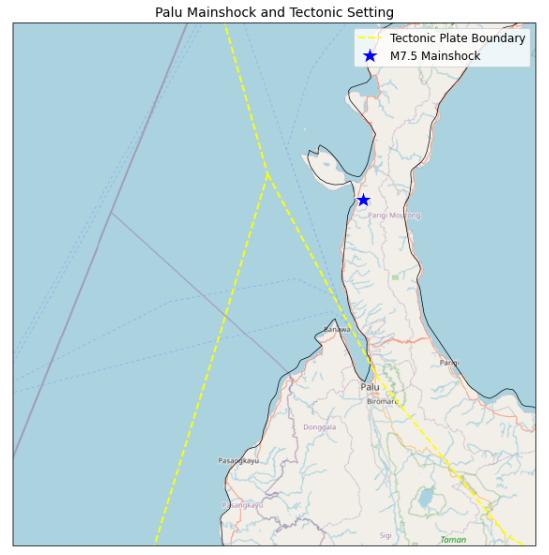
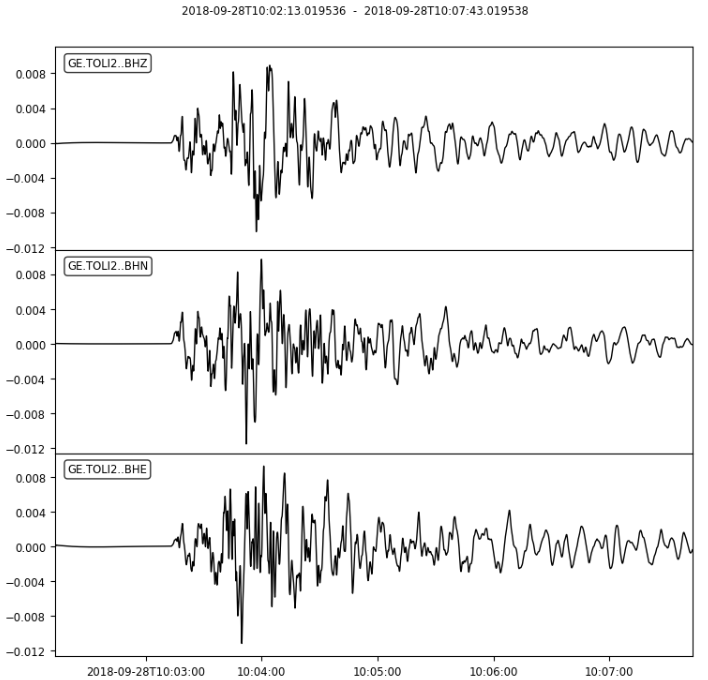
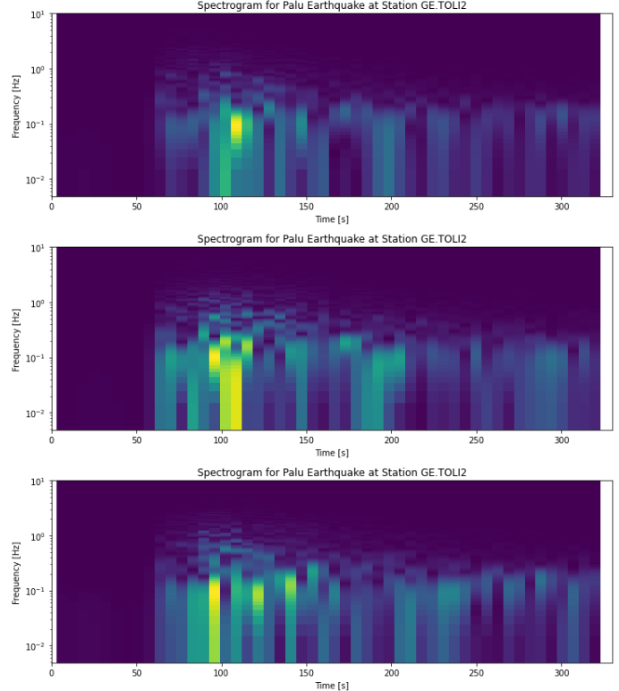

Ahmad Rianul Qauliah
Geophysics
Lulusan Baru Geofisika Universitas Hasanuddin dengan fondasi akademik yang kuat dalam interpretasi data bawah permukaan, manajemen data spasial, dan analisis mitigasi resiko. Saat ini, secara aktif mencari peluang profesional di berbagai sektor, termasuk operasional teknis, pemetaan geospasial, industri energi, maupun manajemen risiko lingkungan, di mana dapat mengaplikasikan keahlian analisis dan eksekusi lapangan untuk mencapai tujuan strategis.
Inversi
Model Bawah Permukaan
Analisis
Data Geofisika, Geologi & Spatial
Tentang Saya
Profil
Freshgraduate Geofisika dengan dedikasi tinggi pada eksplorasi bawah permukaan dan analisis risiko mitigasi. Memiliki keahlian teknis dalam mengoperasikan beberapa instrumen geofisika seperti mikrotremor, Ground Penetrating Radar (GPR), dan seismik, serta berpengalaman dalam melakukan interpretasi data bawah permukaan untuk berbagai proyek kampus.
Selain keahlian instrumen geofisika, memiliki pengalaman lapangan sebagai asisten lapangan, bertanggung jawab atas akuisisi data spasial dari Total Station dan Drone untuk pemetaan. Saat ini secara aktif mencari peluang profesional di industri tambang, energi, maupun mitigasi bencana yang menantang kemampuan dan pengalaman yang lebih luas.
Pendidikan
Universitas Hasanuddin
Sarjana Geofisika | GPA: 3,75
- Mata Kuliah Relevan: Seismic, Geothermal, Petrofisika, dan Geomigas.
- Beasiswa: Penerima Beasiswa Prestasi Akademik dari Pemerintah Kabupaten Luwu Timur (2020–2024).
- Buku: Co-author Buku "Prediksi Lintasan dan Laju Pusaran Siklon Tropis" ISBN: 9789795304852 (Unhas Press, 2023).
Keahlian & Kompetensi
Keahlian Teknis
Software & Perangkat Lunak
Soft Skills & Bahasa
Karakter Kerja
- Analytical Thinking
- Adaptability
- Work Discipline
- Team Collaboration
- Time Management
Bahasa
Pengalaman & Proyek Akademik
Proyek Mahasiswa
EarthScope 2025 Seismology Skill Building Workshop
- Menganalisis karakteristik gelombang seismik dan memetakan Gempa Palu 2018 menggunakan Python (ObsPy) serta mengimplementasikan algoritma dari repositori localmag.
- Memproses dan menyaring katalog data kegempaan regional yang besar untuk memfokuskan analisis secara spesifik pada 2 event utama.
- Menginterpretasikan data waveform dari stasiun pemantau untuk mengukur parameter sumber gempa dan berhasil mengestimasi durasi minimum rekahan (rupture duration) sebesar 42 detik.
- Membuat skrip untuk memvisualisasikan data episenter menjadi peta sebaran seismik guna mempermudah analisis pola patahan dan kondisi tektonik regional.




Operator Data Akuisisi & Teknisi Lapangan
Lab Geofisika Padat, Universitas Hasanuddin
- Mengeksekusi akuisisi data seismik pasif menggunakan sensor SmartSolo IGU-16HR 3C 2Hz pada lintasan 100 meter dengan konfigurasi array geometrik SPAC segitiga (jari-jari 4,62 m) di Desa Lonjoboko, Kabupaten Gowa.
- Memproses rekaman mikrotremor dengan mengekstraksi kurva dispersi melalui analisis koherensi spasial yang dicocokkan dengan fungsi Bessel jenis pertama orde nol (J_0).
- Melakukan pemodelan bawah permukaan 1D dengan menerapkan algoritma inversi Monte Carlo pada kurva dispersi untuk mengestimasi profil kecepatan gelombang geser (Vs) dan menentukan kedalaman lapisan batuan dasar.
- Mengarakterisasi 5 lapisan stratigrafi bawah permukaan dan menghitung nilai Vs30 sebesar 302,47 m/s untuk menetapkan klasifikasi lokasi sebagai Kelas Situs Tanah Sedang (SD) berdasarkan standar SNI 1726:2019.
.heic)
.png)
.png)
.png)
Analisis Petrofisika (Studi Kasus)
Lab Geofisika Padat, Universitas Hasanuddin
- Mengoperasikan perangkat lunak Interactive Petrophysics V3.5 untuk mengevaluasi data Triple Combo Log dari sumur Wellington-KGS-1-32 dan berhasil mengidentifikasi zona prospek hidrokarbon pada kedalaman 3.422 kaki (ft) dengan nilai rata-rata Gamma Ray sebesar 41,399 API.
- Melakukan perhitungan kuantitatif parameter petrofisika pada zona target yang menghasilkan saturasi air (Sw) sebesar 0,839, porositas efektif (PHIE) sebesar 0,0657, dan porositas total (PHIT) sebesar 0,0842.
- Validasi litologi batuan dominan formasi menggunakan analisis crossplot NPHI/RHOB, yang secara akurat mengonfirmasi batupasir (0,19363%) dan dolomit (0,24281%) sebagai komponen utama reservoir bawah permukaan.
.heic)
.png)
.png)
Operator Data Akuisisi (GPR)
Lab Geofisika Padat, Universitas Hasanuddin
- Mengoperasikan Ground Penetrating Radar (GPR) untuk melakukan pemetaan bawah permukaan dangkal secara nondestruktif untuk mengidentifikasi dugaan sisa struktur bangunan di Benteng Somba Opu.
- Mengeksekusi desain survei lapangan dengan mengumpulkan data pada 14 lintasan pengukuran.
- Memproses data mentah (raw data) radargram menggunakan perangkat lunak Geoprojector untuk memetakan persebaran objek tanpa harus melakukan ekskavasi konvensional.
- Menganalisis dan menginterpretasikan anomali amplitudo tinggi pada penampang radargram untuk mengidentifikasi sisa struktur bata benteng pada kedalaman 0,30 hingga 3 meter dengan estimasi nilai permitivitas sebesar 5,5–5,7.
Asisten Lapangan Metode Pemetaan dan Drone
Departemen Geofisika, Universitas Hasanuddin
- Mengawasi dan membimbing lebih dari 220 mahasiswa Geofisika dalam melaksanakan akuisisi data spasial menggunakan total station, theodolite dan drone.
- Memberikan pelatihan kepada para praktisi tentang penggunaan Agisoft Metashape untuk pemrosesan fotogrametri drone yang sesuai dan penggunaan ArcGIS/QGIS untuk manajemen data, digitalisasi, dan pembuatan peta.
- Memberikan pengarahan teknis tentang metodologi survei topografi, khususnya metode poligon untuk memastikan penentuan batas dan koordinat yang akurat.
- Mendemonstrasikan penerapan perangkat lunak Surfer untuk melakukan interpolasi berbasis grid, menghasilkan peta kontur terperinci dan model permukaan dua dimensi.
- Melaksanakan jaminan dan kontrol data (QA/QC) pada semua data yang didapat di lapangan dan memberikan evaluasi kinerja serta skor penilaian.
Magang Geofisika
BBMKG Wilayah IV Makassar (BMKG)
- Melakukan monitoring aktivitas seismik regional secara real-time menggunakan SeisComP untuk mengidentifikasi anomali struktural dengan cepat.
- Mengelola database pemantauan harian dari lebih dari 50 stasiun geofisika dengan merekam, memverifikasi, dan mengkatalogkan data kejadian gempa untuk menjaga integritas data.
- Melakukan pengolahan dan interpretasi awal data seismik dengan proses picking fase gelombang P dan S secara manual guna menentukan parameter hiposenter, episenter, kedalaman, dan magnitudo.
Proyek Pemetaan Kawasan Lereng Bawakaraeng
Lab Geoinformatika, Universitas Hasanuddin
- Mengolah data fotogrametri mentah dari hasil pemetaan drone kawasan lereng Gunung Bawakaraeng untuk menghasilkan model topografi 3D yang akurat pada area medan lereng.
- Melakukan rekonstruksi data spasial menggunakan sistem koordinat WGS 84 dan mengoperasikan perangkat lunak Agisoft Metashape untuk memproduksi Dense Clouds, Orthophotos, dan peta Orthomosaics.
- Menghasilkan dan menganalisis Digital Elevation Models (DEM) serta Digital Terrain Models (DTM) untuk merepresentasikan relief permukaan elevasi tanah.
Ketua Divisi Akademik
Himpunan Ahli Geofisika Indonesia Student Chapter Universitas Hasanuddin (HAGI SC UH)
- Menjadi pembicara di acara Learning Together I bersama member HAGI SC UH dengan lebih dari 15 anggota dengan tema "Common Spatial Data in Python".
- Bertanggung jawab untuk membuat dan mengerjakan program Learning Together II (Introduction to Basic Geoelectrics: Processing Geoelectrical Data with Res2Dinv) dengan lebih dari 10 peserta.
- Menyediakan 1 atau 2 konten edukasi setiap bulan di media sosial HAGI SC UH terkait Geofisika.
Anggota Akademik
Himpunan Mahasiswa Geofisika Universitas Hasanuddin (HMGF UH)
- Melaksanakan beberapa program divisi seperti Studi Instrumentasi Geofisika dan Geolistrik.
- Berhasil melaksanakan Geophysical Instrumental Studies (GIS) pada Automatic Weather Stations dengan lebih dari 30 peserta.
Lisensi, Sertifikasi & Publikasi
Prediksi Lintasan dan Laju Pusaran Siklon Tropis
Buku kolaboratif (sebagai co-author) yang membahas tentang model pemodelan dan prediksi lintasan serta pergerakan siklon tropis menggunakan parameter meteorologi dan geofisika.
Level 1 IWCF Programme
International Well Control Forum (IWCF)
Tahun 2026Safety Compliance: CSMS Breakdown
Sahara.id
Tahun 2026Diklat Pra POP (Pengawas Operasional Pertama)
PT Grow Mining Corp Indonesia
Tahun 2026Oil & Gas Industry Operations and Markets
Duke University / Coursera
Tahun 2025Workshop Trio Migas.id
Reservoir, Drilling & Production Techniques
Tahun 2024Seismic Data Processing
Open Learning USM MOOC
Tahun 2024Petroleum School Migas.id Batch 8
Migas.id
Tahun 2023Python for Data Science & GIS Analysis
Geosoftware Community
Tahun 2021Kontak Hubung
Ayo Terhubung!
Saya selalu terbuka untuk berdiskusi tentang peluang magang/kerja, proyek kolaboratif, atau sekadar bertukar pikiran mengenai geofisika dan industri energi.
Lokasi
Makassar, Sulawesi Selatan, Indonesia